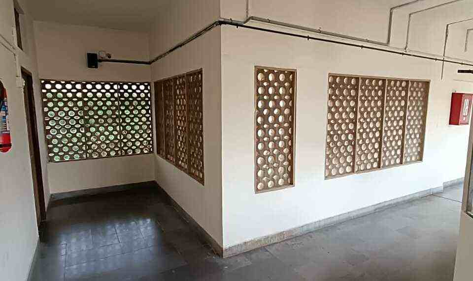
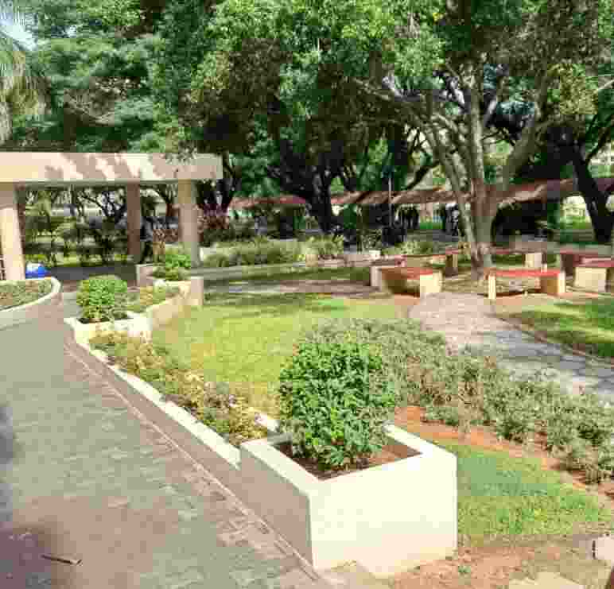
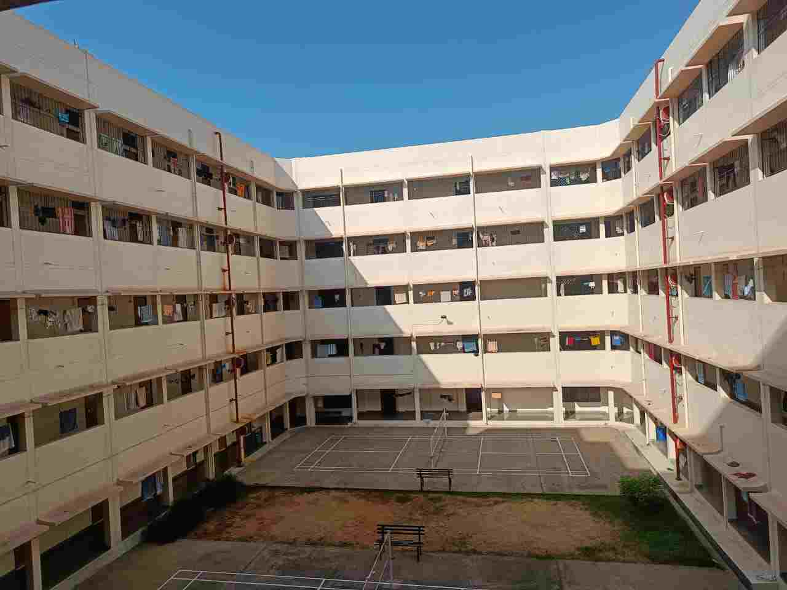
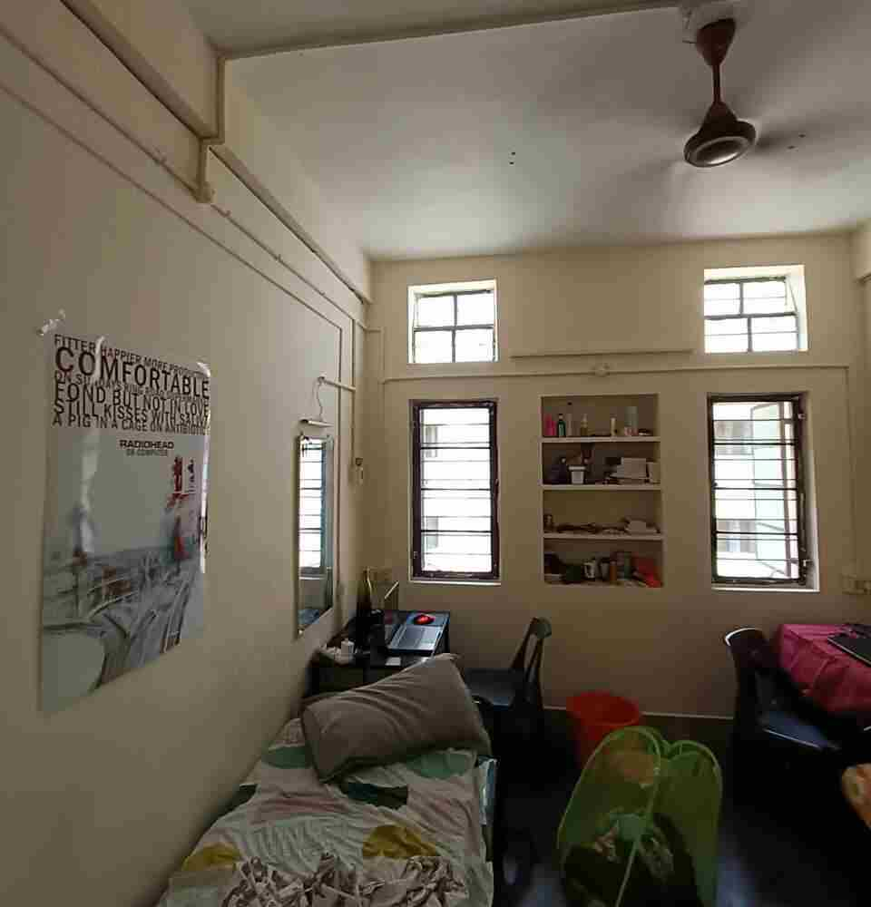
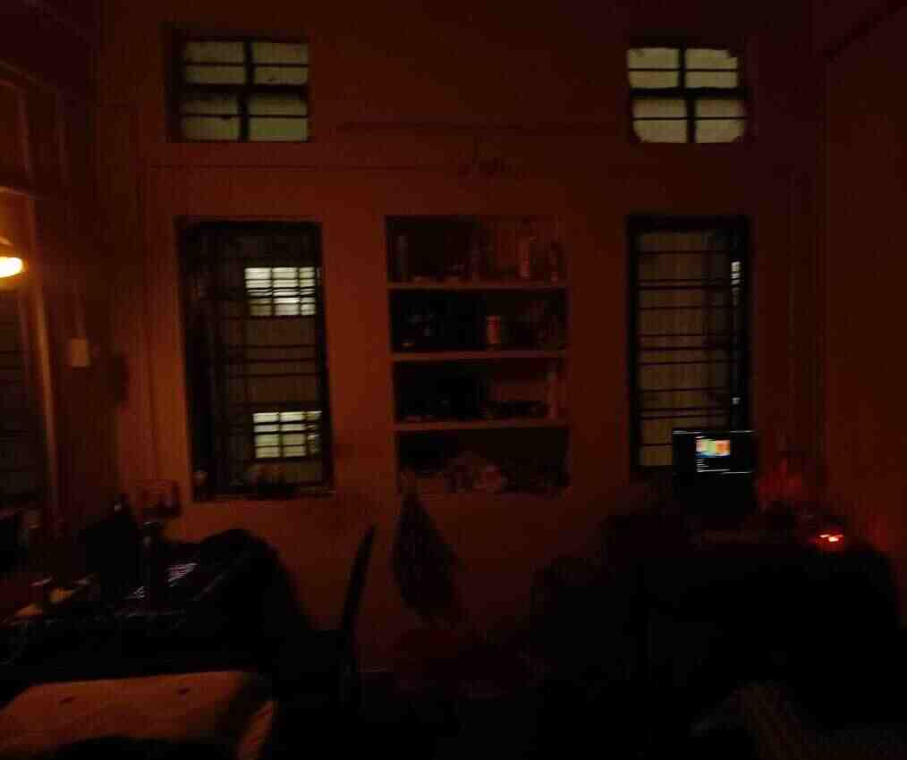
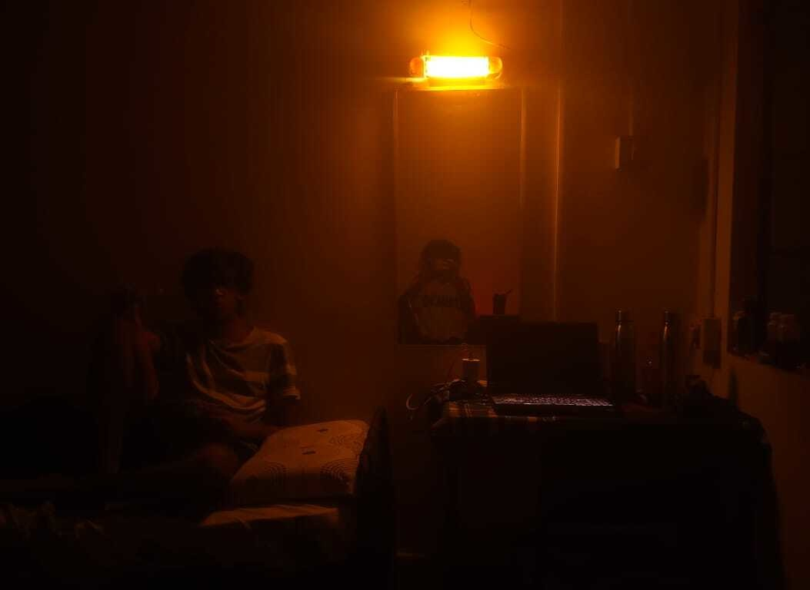

Beating the heat
No room faces another room. All of the rooms face inwards to the badminton courts in the middle of the block. If you walk down the hallway, on one side, you will find the doors leading to rooms, and on the other, you will find a nice view of people playing badminton. On top of each door, there is a mesh that allows for air flow from the center of the block to your room.

The block only receives direct sunlight on its left and right sides. On these sides, washrooms are placed, hence other than the rooms in the corner, none get direct sunlight to heat up. In fact, the washroom is placed in the center of the side, and it does not span the entire length. The rest of it is circular openings with a mesh on them. 
Other good stuff
The block has 3 badminton courts, and beside the entrance, we find a tree with benches around it. There are 2 staircases, one for the rooms at the front face and one for the back face of the block. The block has only 4 floors and is very spacious. I enjoyed my time living here. I hope that in the future I can continue being surrounded by things that have been designed by people who cared about what I, as a consumer, would care about.     